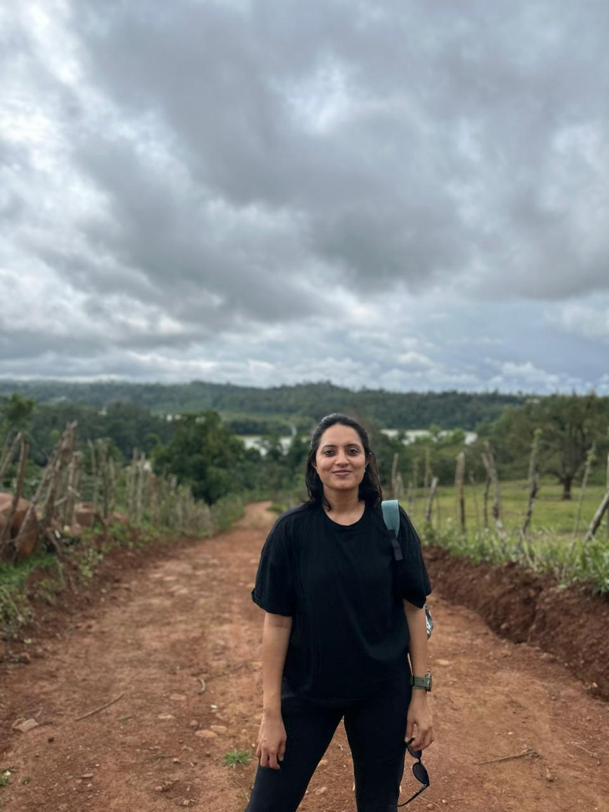

I've spent years trying to understand what makes organisations genuinely work for the people inside them. What builds real trust, what sustains a culture as a team scales, what helps people do their best work even when things are moving fast. Recently I've been exploring those same questions through an AI lens, and building with it. The intersection of sharp people judgment and the right tools is where I work best.
Open to the right opportunity — fractional, project-based, or full-time. My preference is to start with a defined engagement so we both get to see how it works before making a longer commitment.